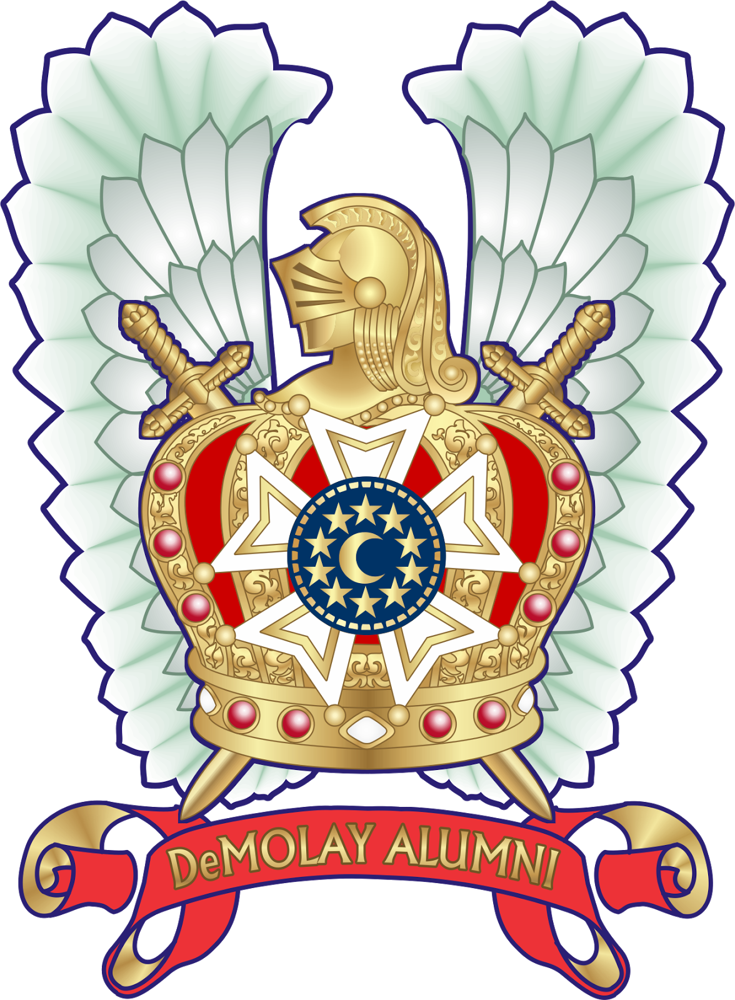
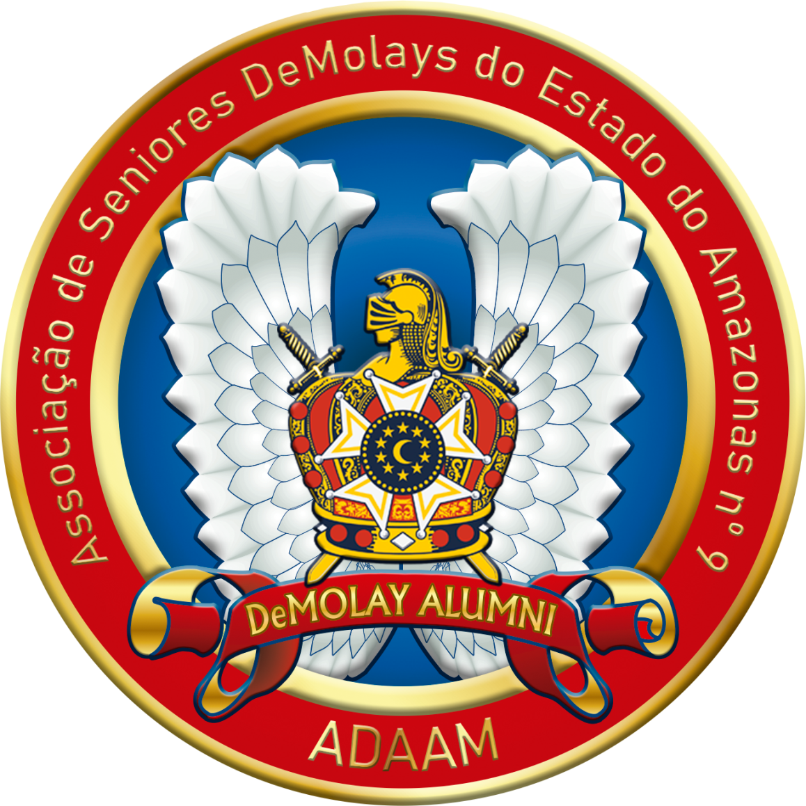
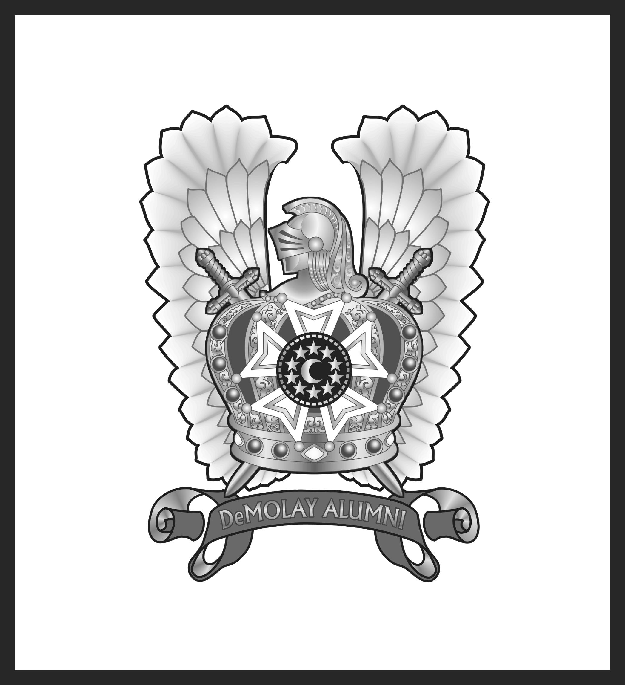
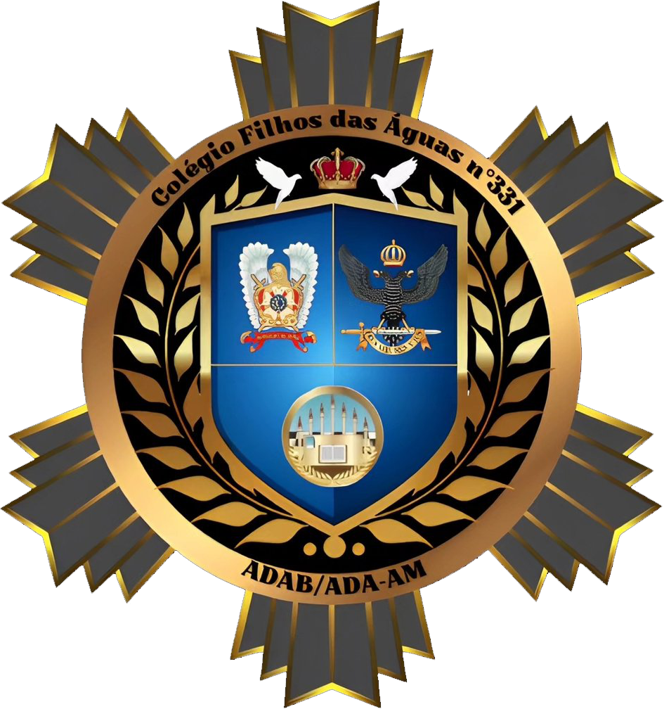
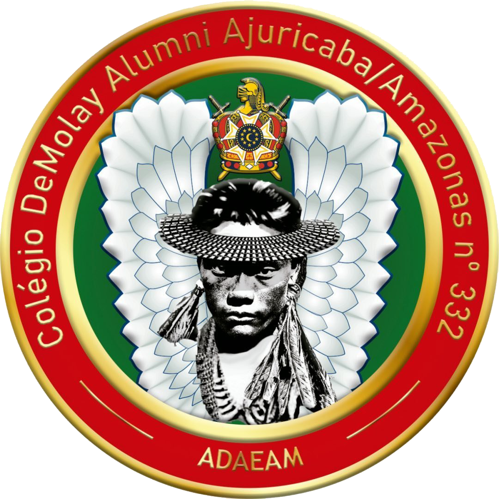
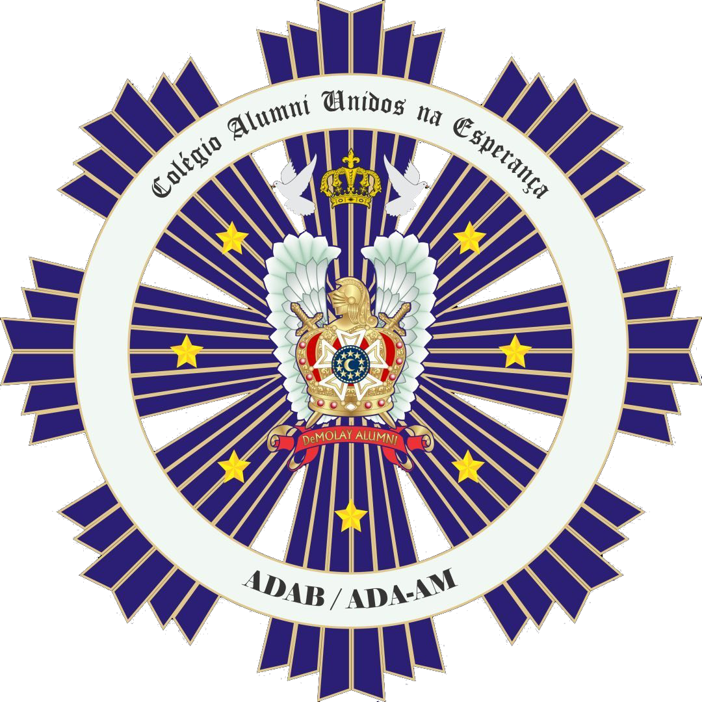
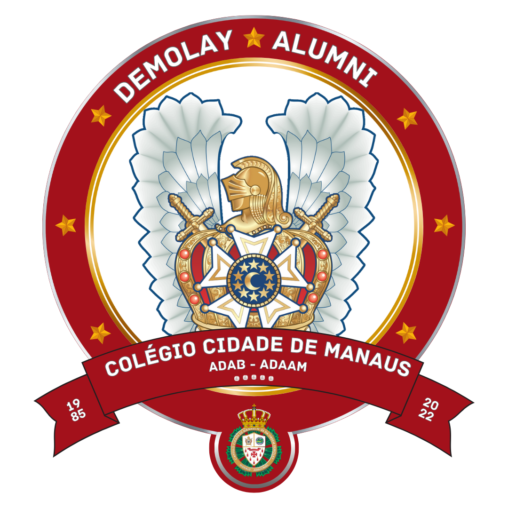
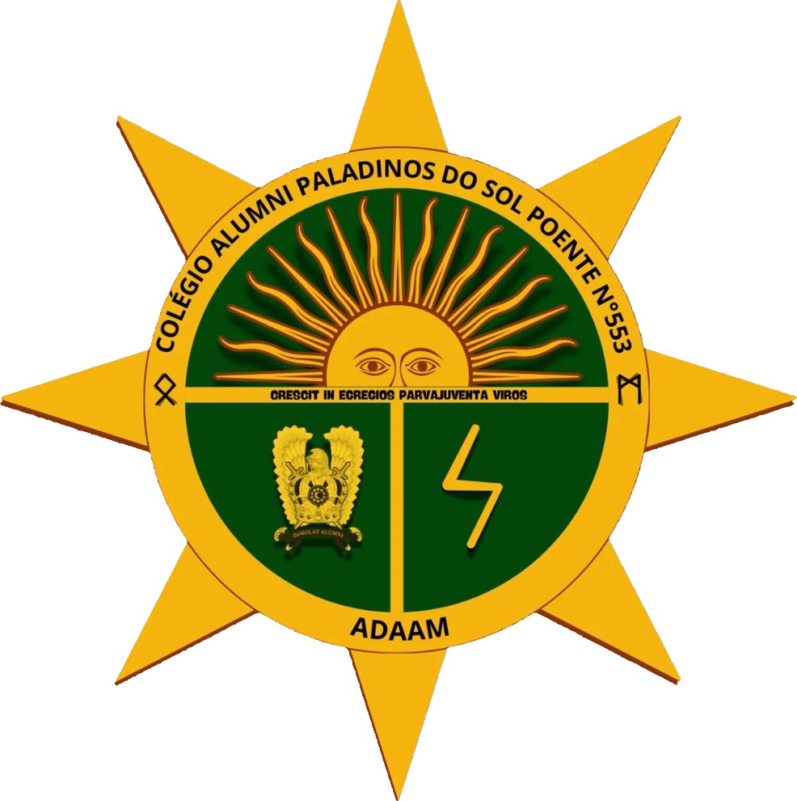

Alumni significa ex-aluno. Já que a Ordem DeMolay é uma escola (que forma líderes), aquele que atinge a idade de 21 anos se torna um ex-aluno, portanto um Alumni.O aluno bem formado não deixa de praticar o que aprendeu quando se torna ex-aluno. Isso acontece também com o membro da Ordem DeMolay, que ao atingir 21 anos, nantêm seu compromisso com os princípios e valores DeMolay.
Assim sendo, muitos daqueles que deixaram de ser membros ativos, podem manter vínculo com a organização. Muitos Alumni alcançam posições de destaque na sociedade e continuam praticando os valores DeMolay em suas vidas profissionais e pessoais.
Os Colégios DeMolay Alumni são as células da instituição que estão vincuadas aos Capítulos DeMolays e tem por atribuição organizar diversas atividades como reuniões periódicas, eventos de confraternização, programas de mentoria para DeMolays jovens, participação em projetos comunitários e contribuições para o desenvolvimento de programas estaduais. Além disso, Alumni promovem o intercâmbio de experiências e conhecimentos acumulados ao longo dos anos de atividade na Ordem.

- Data de Fundação: 03/05/2007.
- Data de Instalação: 03/05/2007.
- Primeiro Presidente: Vanylton Bezerra dos Santos.
- Atual Presidente: Bruno dos Reis Mendes.
- Atual Mandato: Março/2026 à Março/2027
Colégios DeMolays Alumni do Amazonas
 |
Colegio DeMolay Alumni: Filhos do Verde Amazônico nº. 255
Capítulo DeMolay Vinculado: Filhos do Verde Amazônico nº. 43 Data de Fundação: 09/06/2020 Data de Instalação: 25/07/2020 Primeiro Presidente: Guilherme Destro Calixto Atual Presidente: Guilherme Destro Calixto Atual Mandato: Jan-Jun/2026 |
 |
Colegio DeMolay Alumni: Filhos das Águas nº. 331
Capítulo DeMolay Vinculado: Filhos das Águas nº. 926 Data de Fundação: 26/07/2021 Data de Instalação: 04/09/2021 Primeiro Presidente: Audecy Souza Marinho Junior Atual Presidente: Vinícius Sena de Sousa Silva Atual Mandato: Jan-Jun/2026 |
 |
Colegio DeMolay Alumni: Ajuricaba Amazonas nº. 332
Capítulo DeMolay Vinculado: Ajuricaba Amazonas nº. 263 Data de Fundação: 02/08/2021 Data de Instalação: 01/09/2021 Primeiro Presidente: Victor Rafael Ordozgoite Atual Presidente: Igor Alexandre Gioia de Souto Atual Mandato: Jan-Jun/2026 |
 |
Colegio DeMolay Alumni: Unidos na Esperança nº. 338
Capítulo DeMolay Vinculado: Unidos na Esperança nº. 29 Data de Fundação: 19/08/2021 Data de Instalação: 17/09/2021 Primeiro Presidente: Luís Felipe Farias Maia Atual Presidente: Bruno dos Reis Mendes Atual Mandato: Jan-Jun/2026 |
| Colegio DeMolay Alumni: Sete Virtudes nº. 390
Capítulo DeMolay Vinculado: Sete Virtudes nº. 1151 Data de Fundação: 02/05/2022 Data de Instalação: 25/06/2022 Primeiro Presidente: Marcos Vinícus da Silva Atual Presidente: Marcos Vinícus da Silva Atual Mandato: Jan-Jun/2026 |
|
 |
Colegio DeMolay Alumni: Cidade de Manaus nº. 393
Capítulo DeMolay Vinculado: Cidade de Manaus nº. 26 Data de Fundação: 24/05/2022 Data de Instalação: 18/06/2022 Primeiro Presidente: Filipe Rezk Sanches Atual Presidente: Fabio Marcello Vilanova de Abreu Filho Atual Mandato: Jan-Jun/2026 |
 |
Colegio DeMolay Alumni: Paladinos do Sol Poente nº. 553
Capítulo DeMolay Vinculado: Cavaleiros da Verdadeira Luz nº. 1200 Data de Fundação: 16/01/2025 Data de Instalação: 01/02/2025 Primeiro Presidente: Salomão Ronielli Campos Moreira Atual Presidente: Raphael Henrique Jorge de Araujo Atual Mandato: Jan-Jun/2026 |
| Colegio DeMolay Alumni: Almirante Barão de Teffé nº. 574
Capítulo DeMolay Vinculado: Forte de Ega nº. 1186 Data de Fundação: 13/05/2025 Data de Instalação: 31/05/2025 Primeiro Presidente: Andre Giovanni de Almeida Coelho Atual Presidente: Andre Giovanni de Almeida Coelho Atual Mandato: Jan-Jun/2026 |